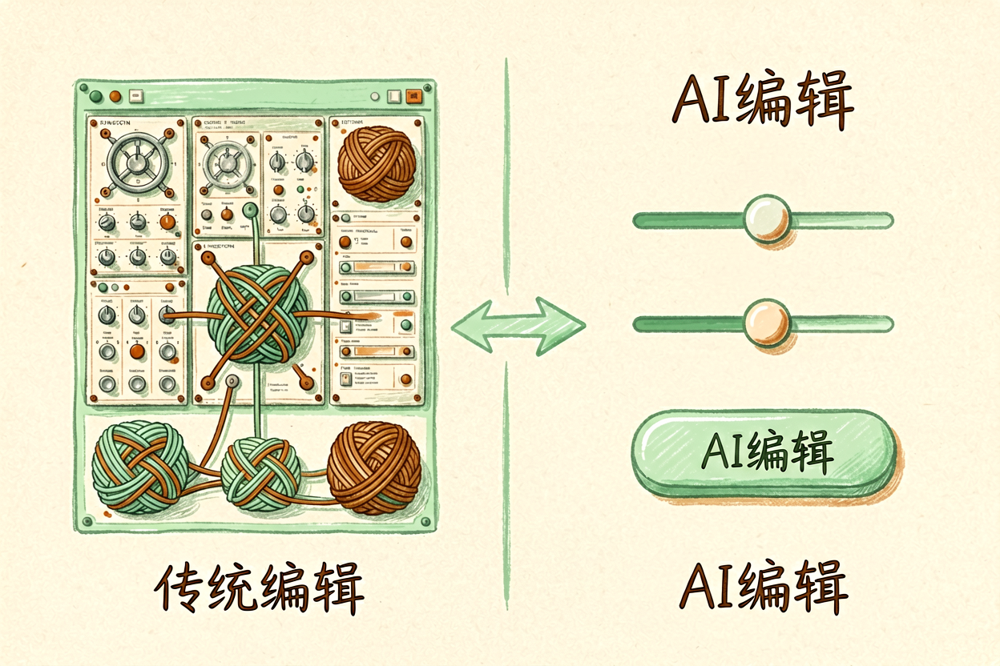

AI图像编辑工具对比：Photoshop AI与美图和稿定三方案例解析
面对众多图像编辑工具不知道如何抉择？本文横向对比三款主流工具，帮你找到最适合的那一款。
AI图像编辑工具对比是本文的核心主题，下面详细介绍如何使用。
AI图像编辑工具对比：为什么需要AI工具

传统图像编辑依赖专业技能和复杂软件，学习成本高、操作门槛高。AI图像编辑工具通过智能算法简化了抠图、去污、调色、修复等常用操作，让普通人也能快速产出专业级图像。选择工具时，要考虑功能全面性、操作便捷性、价格合理性三个维度。
新手最容易犯的错误是一次性购买太多工具。实际上，大多数需求一款工具就能满足，关键在于选对。先明确自己的核心需求，再对比工具的能力，避免浪费预算。
AI图像编辑工具对比：三款核心功能

AI图像编辑工具对比首先看功能。Photoshop AI功能最全面，支持选区、蒙版、调色、修复、生成填充等高级操作。美图秀秀主打美颜和滤镜，操作简单，适合社交分享。稿定设计侧重模板和批量处理，适合电商和营销场景。
功能选择要匹配使用场景。专业设计师选Photoshop AI，普通用户选美图秀秀，电商从业者选稿定设计。不要盲目追求功能全面，适合才是最好的。参考Midjourney新手入门中的工具选择思路，理解功能与场景的匹配逻辑。
| 工具 | 核心功能 | 价格 | 适合人群 |
|---|---|---|---|
| Photoshop AI | 专业编辑 | 订阅制 | 设计师 |
| 美图秀秀 | 美颜滤镜 | 免费/订阅 | 普通用户 |
| 稿定设计 | 模板批量 | 订阅制 | 电商 |
AI图像编辑工具对比：价格与性价比

价格是影响选择的重要因素。Photoshop AI订阅制，月费较高，但功能最专业。美图秀秀免费版功能足够日常使用，高级功能订阅费用较低。稿定设计按模板数量定价，适合批量制作场景。
性价比不等于便宜。对于专业用户，Photoshop AI的订阅费是值得的，因为它能提升工作效率。对于偶尔使用的用户，美图秀秀的免费版就足够。参考免费AI工具清单，了解免费替代方案。
AI图像编辑工具对比使用示例代码/配置：
角色：资深创作者
任务：生成高质量内容
输出：结构化文案
约束：使用中文，字数控制在500字以内AI图像编辑工具对比：适用场景建议

AI图像编辑工具对比的最终目的是帮用户选对工具。Photoshop AI适合专业设计和复杂处理，美图秀秀适合日常修图和社交分享，稿定设计适合电商图和营销素材批量制作。
新手建议先从免费版开始，熟悉后再考虑付费。不要一开始就购买高级版，容易浪费。结合AI处理Excel教程中的工具选择思路，理解不同工具的定位差异。选对工具，工作效率会显著提升。
AI图像编辑工具对比：总结
AI图像编辑工具对比的结论是：没有最好的工具，只有最适合的工具。根据你的使用频率、预算、技能水平选择。专业用户选Photoshop AI，普通用户选美图秀秀，电商用户选稿定设计。
以上是关于AI图像编辑工具对比的完整指南。
以上是关于AI图像编辑工具对比的完整指南。 !尾图核心要点回顾
{kind=link}
本文信息核对于 2026-09-07。AI 产品的价格、免费额度与功能变动频繁，实际以各工具官网当前说明为准。